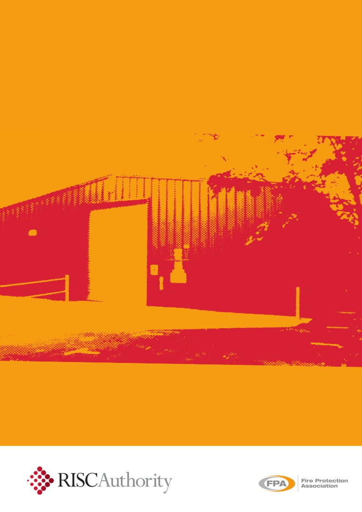
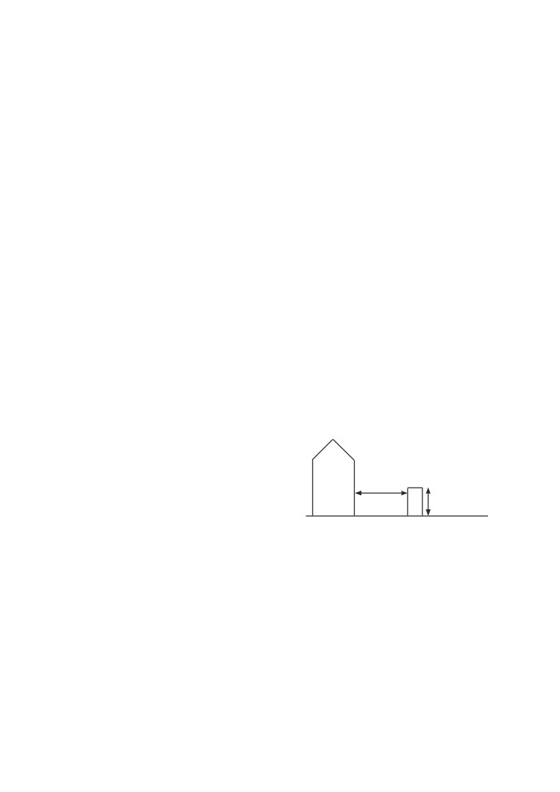
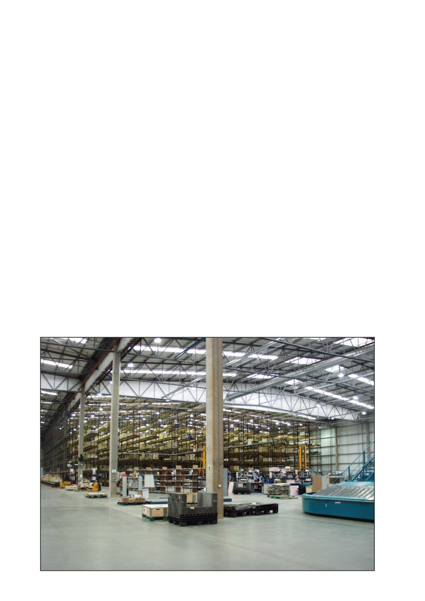
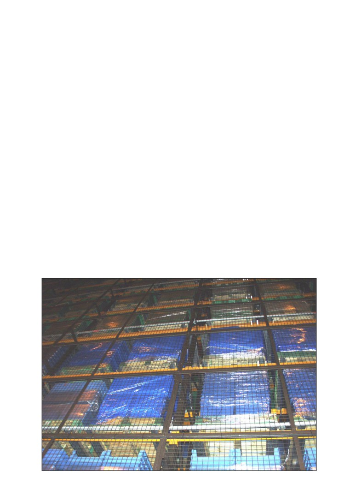
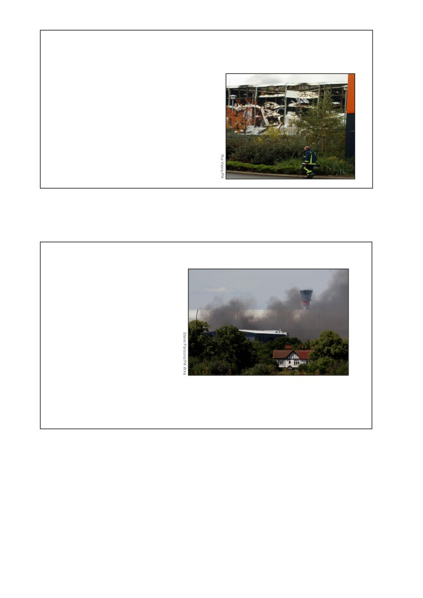

RC18
First published 1989
Version 03
Risk Control
Fire safety in warehouses
administered by
IMPORTANT NOTICE
This document has been developed through the RISCAuthority and
published by the Fire Protection Association
(FPA). RISCAuthority
membership comprises a group of UK insurers that actively support
a number of expert working groups developing and promulgating
best practice for the protection of people, property, business and the
environment from loss due to fire and other risks. The technical expertise
for this document has been provided by the Technical Directorate of
the FPA, external consultants, and experts from the insurance industry
who together form the various RISCAuthority Working Groups. Although
produced with insurer input it does not (and is not intended to) represent
a pan-insurer perspective. Individual insurance companies will have their
own requirements which may be different from or not reflected in the
content of this document.
The FPA has made extensive efforts to check the accuracy of the
information and advice contained in this document and it is believed to
be accurate at the time of printing. However, the FPA makes no guarantee,
CONTENTS
representation or warranty (express or implied) as to the accuracy or
Scope
3
completeness of any information or advice contained in this document.
All advice and recommendations are presented in good faith on the basis
Synopsis
3
of information, knowledge and technology as at the date of publication of
this document.
Definitions
3
Without prejudice to the generality of the foregoing, the FPA makes no
Introduction
3
guarantee, representation or warranty
(express or implied) that this
document considers all systems, equipment and procedures or state-of-
Recommendations
3
the-art technologies current at the date of this document.
1. Compliance with fire safety legislation
3
Use of, or reliance upon, this document, or any part of its content, is
voluntary and is at the user’s own risk. Anyone considering using or
2. Business continuity
4
implementing any recommendation or advice within this document should
rely on his or her own personal judgement or, as appropriate, seek the
3. Fire safety management
4
advice of a competent professional and rely on that professional’s advice.
4. Arson prevention
6
Nothing in this document replaces or excludes (nor is intended to replace
or exclude), entirely or in part, mandatory and/or legal requirements
5. Compartmentation
7
howsoever arising (including without prejudice to the generality of the
foregoing any such requirements for maintaining health and safety in the
6. Electricity, gas and other services
7
workplace).
7. Fire protection
7
Except to the extent that it is unlawful to exclude any liability, the FPA
accepts no liability whatsoever for any direct, indirect or consequential
loss or damage arising in any way from the publication of this document
Checklist
11
or any part of it, or any use of, or reliance placed on, the content of this
document or any part of it.
References
20
2
SCOPE
these facilities range from small electronic items to books, CDs
and engineering products for example. The number and wide
These recommendations concentrate on the key aspects of
variety of items of stock, activities which may be undertaken
property protection in warehouses and storage premises and are
(for example heated shrink wrapping and charging of electric
intended to supplement the life safety issues that are addressed
elsewhere, for example in HM Government Fire Safety Risk
vehicles) and the associated numbers of vehicle movements
Assessment-Factories and Warehouses (ref 1).
present numerous opportunities for incidents to occur in the
absence of a rigorous fire safety management regime.
Warehouse accommodation considered in this document
includes commercial storage buildings on manufacturing sites
Whilst the incidence of fires in warehouses is generally low, the
and business parks but does not extend to retail warehouses
size of the buildings and the volumes of combustible material
which are routinely visited by members of the public or to
in storage within result in many of the fires becoming major
premises designed to be let in small areas for the storage of
conflagrations which pose challenges for fire and rescue services
personal effects.
and result in significant property losses and disruption to business
continuity.
Additional hazards may be associated with specialist warehouses,
such as automated high bay warehouses, cold stores and
A detailed fire risk assessment to take account of property
premises used primarily for the storage of chemicals and other
protection, as well as life safety, is a key element of an effective
hazardous materials, and these are not specifically addressed in
fire safety strategy. In some cases an assessment in compliance
this document. Additional guidance should be sought regarding
with the Dangerous Substances and Explosive Atmospheres
these premises, in addition to the material set out in this document.
(DSEAR) Regulations 2002 will also need to be undertaken.
Details of styles and construction of racking are outside the
These assessments will identify the fire hazards and the potential
scope of this publication.
for property and business interruption losses and lead to the
preparation of an effective risk control programme for the
When new warehouse premises are being planned, reference
premises. The assessment should consider the structure of
should be made to the FPA Design Guide for the Fire Protection
the building and the combustibility and/or flammability of the
of Buildings: Warehouse and storage buildings 1: Design
products stored both within and outside the premises. Vigilance
Principles (ref 2). Details regarding the planning and construction
with regard to deliberate fire setting must also be maintained, with
of new warehouse facilities set out in the Design Principles are not
arson prevention also being an important part of the assessment.
repeated in this publication.
It is important to recognise that in many warehouses the products
SYNOPSIS
stored and the mode of storage, together with the associated fire
These recommendations concentrate on key aspects of property
hazards, may change over remarkably short periods of time and
protection in warehouses and storage premises.
thus the fire risk assessment process needs to be an ongoing
activity. This will ensure that any alterations to the overall fire risk
The provisions apply to forms of ambient temperature warehouse
are correctly identified so that the fire safety strategy may be
accommodation including storage buildings on manufacturing sites.
modified as necessary.
An emphasis is made on the need for the potential for and
Particular attention needs to be given to some common
prevention/mitigation of arson to be a key element of the fire risk
activities that are carried out in existing warehouses and thus
assessment for the premises, and for careful consideration to be
the recommendations set out in this document should be read
given to the provisions for the fire and rescue service.
together with those relating to hot work (RC7), fork-lift trucks
These recommendations refer to a number of other RISCAuthority
(RC11), shrink wrapping (RC17) and the charging of electric
documents which should be consulted for further advice.
vehicles (RC59) (refs 3-6)
DEFINITIONS
RECOMMENDATIONS
Arson
1. Compliance with fire safety legislation
The deliberate setting of fires by intruders or people with legitimate
1.1
A suitable and sufficient fire risk assessment for the
access to the premises, which is referred to as wilful fire raising
premises should be undertaken in compliance with the
in Scotland.
Regulatory Reform (Fire Safety) Order 2005 (or equivalent
Compartment
legislation in Scotland and Northern Ireland) (refs 7-11).
The combustibility of the stock and packaging, the nature
An area within a building defined by impervious boundaries that
of the operations, the internal layout and the method of
provides a designated degree of fire resistance.
storage have a major influence on the hazards presented.
Composite panel
Measures that should be considered include:
A panel composed of an insulating core material encapsulated
• physical segregation of the warehouse from
by steel facings. Insulating cores may comprise polyurethane,
manufacturing areas and other operations being
polyisocyanurate, modified phenolic, polystyrene or mineral wool.
carried out on site;
• suitable fire detection and warning systems in case of
INTRODUCTION
fire (see section 7.1);
Over the past few years the number and size of warehouses has
increased dramatically, especially in locations on key transport
• the installation of sprinkler and other fixed fire
hubs or adjacent to motorway junctions. The materials stored in
suppression systems;
3

• the provision of appropriate portable fire fighting
3.3
Each goods inwards and despatch area should be clearly
equipment;
defined. Where the risk assessment identifies an increased
fire hazard, separation should be provided from the
• development of an emergency action plan to protect life
warehouse by compartment walls, floors and ceilings with
and property and ensure the continuing functioning of
an appropriate level of fire resistance.
the business in the case of fire; and
Housekeeping
• staff training in the actions to take in the event of fire,
including the safe shut down of conveyors or similar
3.4
The premises should be kept in a clean and orderly
equipment used in the area, and evacuation of the
condition at all times and goods or waste materials should
premises.
not be stored in aisles and other designated clear areas.
1.2
An assessment in compliance with the Dangerous
3.5
Stocks of combustible packaging materials in the open
Substances and Explosive Atmospheres Regulations
warehouse should be kept to a minimum; bulk supplies
2002 (DSEAR)
(ref
12) should be undertaken where
should be stored in a separate building or in a separate fire
hazardous materials such as significant quantities of
compartment within the main warehouse.
flammable liquids, oils, compressed gases or dusts are
3.6
All loose-fill combustible packaging such as shredded
being stored. The operation of the warehouse should take
paper, wood-wool and polystyrene beads should be
into account the findings of the DSEAR assessment which
contained in steel bins fitted with steel lids which are kept
should identify the hazardous materials that are present
closed when the container is not in use.
and relevant hazard zones where there may be potential for
explosible quantities of flammable liquid vapours or dusts
3.7
The internal storage of idle pallets should be kept to a
minimum, unless external storage is impracticable or there
to accumulate.
is a significant risk of external items being the target for an
2. Business continuity
arson attack.
Even a small fire in a warehouse can have a disproportionate
3.8
All waste materials should be swept up and removed at the
effect on a business and in some cases contamination from such
end of each working period. Particular attention should be
an event can be sufficiently severe to result in severe disruption,
given to goods inwards and despatch areas.
with associated loss of orders, jobs, income and profit.
3.9
Combustible materials or items awaiting delivery should
2.1
All organisations should take steps to ensure the continued
not be allowed to remain on loading docks or beneath
smooth running of their business by making a suitable
external canopies when the premises are unoccupied.
emergency plan. Guidance for this is set out in Business
3.10
Combustible materials, including idle pallets, stored
Resilience: A Guide to protecting your business and its
outside should not be stacked more than 4m high or be
People (ref 13). The emergency plan should address the
stored within 10m of a building. Where these conditions
implications of a fire, flood or other perceived disaster on
cannot be met, the insurer should be consulted.
all facets of the business model. It should indicate the lines
of communication that should be followed and the contact
details for specialist assistance, providers of alternative
accommodation and suppliers of manufacturing plant.
Combustible
10m minimum
2.2
When complete, the emergency plan should be tested
goods not
Warehouse
either fully or by means of a table top exercise, with the
stacked more
results being assessed and amendments made to the plan
than 4m high
as necessary.
2.3
Consideration may be given to applying commercially
available computer programmes, such as the ROBUST
software
(Resilient Business Software Toolkit) that is
3.11
Where plastic pallets are in use, the storage arrangements
available free of charge
(ref
14), or other appropriate
should be subject to a specific fire risk assessment.
products, to develop and check the adequacy of the plan.
3.12
External storage should be sited at least
15m from
3. Fire safety management
hazardous installations such as transformers, flammable
liquid stores and liquefied petroleum gas tanks.
3.1
Close liaison should be established with the fire and rescue
service from the time of the planning stage, especially in
3.13
All combustible waste removed from the warehouse should
cases where storage is being planned at high level. The
be contained in secure, enclosed metal skips or bins with
service will need to visit the site to establish the location
a compactor being used where necessary. Where the use
and extent of water supplies available in the locality. They
of open-topped skips is necessary, they should be located
will also need to be provided with details of water sprinklers
10m clear of the buildings and any external storage. Further
and any other automatic fire suppression systems that
advice regarding fire safety and waste materials is set out
have been installed.
in an FPA publication with this title (ref 15).
3.2
The benefits of a comprehensive fire safety management
3.14
The area within 10m of the building(s) and external storage
regime coupled with appropriate fire safety procedures and
should be kept clear of undergrowth. The use of chemical
adequate staff training that are observed and embraced by
weed control formulations containing chlorates should be
all staff cannot be over-emphasised.
avoided.
4
3.15
Combustible materials should be located at least 2m from
be located near an external wall and be provided with
boundary walls or fences.
guard rails, allowing a clear space of at least 1m from all
surfaces of the appliance. Further information regarding
3.16
The burning of rubbish in the open should be strictly
oil fired boilers is set out in RISCAuthority document RC9:
prohibited.
Recommendations for oil-fired heating installations
3.17
Defined areas should be provided for parking cars. Similar
(ref 17).
provisions should be available for delivery vehicles and trailers
3.26
Flue pipes from heating appliances should take the most
to indicate where they should be parked except when loading
direct route from the building and should not penetrate fire
or unloading. Parking should be at least 10m away from
compartment walls unless absolutely unavoidable. Where
buildings, hazardous installations and loading areas.
it is necessary for flues to pass through fire compartment
Closing time inspections
walls or floors, proprietary sleeves, penetration seals
and dampers should be fitted as set out in the FPA
3.18
Most major fires in industrial and commercial premises
Design Guide: Protection of Openings and service
occur outside normal working hours; closing time
penetrations from fire (ref 18). Where flues pass through
inspections should therefore be instituted to form a key
combustible material, it should be cut away for a distance
element of an effective risk control programme.
of at least 150mm from the duct and the space filled with
3.19
A detailed inspection of the warehouse should be
non-combustible insulation.
completed and logged by a responsible person at the end
3.27
Where it is necessary to route flue pipes through or near
of each period of work to ensure that the premises are left
to storage racking or mezzanine floors, suitable guards
in a safe and secure condition. In particular, this will include
should be fitted to provide a clear space of at least 1m
checks that:
from combustible or flammable materials.
• any conveyors and packing process have been stopped
3.28
Outlets from flues should be positioned so as to avoid
and made safe;
tarry deposits, especially those from biomass boilers,
• all accumulated rubbish has been removed;
accumulating on roofs.
• plant and services have been isolated as required;
3.29
Overhead heaters should be sited so as to provide at
• fire doors and shutters are closed; and
least 2m clearance from combustible materials. Heaters
should not be positioned so as to direct the hot air towards
• security measures are in place.
nearby composite panel walls, whether these form internal
Hot work
or external elements of structure. The siting of overhead
heaters should be reassessed when alterations to storage
3.20
Unless unavoidable, hot work such as welding, flame cutting
arrangements or the type of stock or its packaging
and similar activities should not take place in a warehouse.
are being considered and at times when the fire risk
If for justified reasons this cannot be achieved, all hot
assessment for the warehouse is being reviewed.
work activities should be conducted under an effective
Permit to Work system and in strict accordance with the
Smoking
RISCAuthority document RC7: Recommendations for
3.30
In accordance with legislation in England, Wales, Scotland
hot work (ref 3).
and Northern Ireland, smoking in warehouses should be
3.21
All shrink wrapping operations should be carried
strictly prohibited and notices to this effect prominently
out in accordance with the requirements of RC17:
displayed. A designated safe smoking area should be
Recommendations for fire safety in shrink wrapping
provided, and where practicable this should be at least
processes (ref 5).
10m from the building and other combustible items. Further
guidance is set out in RISCAuthority publication RC51:
3.22
As well as the hazards directly associated with hot work,
Recommendations regarding smoking at work (ref 19).
other contractors’ operations (such as the laying of flooring
with volatile adhesives) may result in an increase in risk
3.31
The designated smoking area should be remote from
to the premises if allowed to proceed without suitable
entrances to the building and not be located beneath a
management controls. An additional assessment of the
canopy or low slung eaves.
hazards posed by all contractors’ operations should
Staff procedures and training
be carried out and any necessary control measures
introduced before the operations commence.
3.32
The correct procedures for raising the alarm and
summoning the fire and rescue service should be
Heating
established and form part of the staff fire safety training
3.23
Space heating systems should be designed, installed
programme.
and maintained in accordance with the manufacturer’s
3.33
Induction and periodic refresher training courses should be
instructions.
provided in the use of fire extinguishers and the procedures
3.24
The use of portable heaters and fans should be avoided.
to be followed when discovering a fire and responding to a
fire alarm.
3.25
Central heating boilers should preferably be located in
a separate fire compartment, clear of all combustible
3.34
Where staff do not have English as a first language it
materials, and providing at least 60 minutes’ fire separation
should be established that fire safety training has been
from the remainder of the premises. Where this is not
properly understood. Where necessary, interpreters may
possible, fixed gas or oil fired heat exchange units should
need to be provided at training events and supporting
5
literature and notices be produced in appropriate
products are set out in RISCAuthority Recommendations
languages.
refs 21, 22 and 23 respectively.)
3.35
Training should be given to selected personnel in the
3.45
Only the minimum volumes of flammable liquids should be
checking and operation of the sprinkler and/or other fixed
held within warehouse premises. Where it is necessary
fire fighting systems where appropriate in accordance with
to store flammable liquids within buildings, use should be
manufacturers instructions.
made of bunded pallets or similar provisions to retain any
spillage.
3.36
An auditing programme should be established in which all
fire protection measures and procedures are monitored.
3.46
Hazardous goods should be thoroughly inspected on
Any deficiencies arising from the audit should be reported
arrival. A safe and secure holding area at least 10m from
and actioned as soon as possible.
any building or plant should be available to quarantine
any defective or damaged containers pending their safe
3.37
Staff should be instructed to report to a named authority
disposal. Provisions to deal with spillages and leakage
any impairment in fire protection and safety systems. This
should be available and staff trained in their use.
is particularly important where dealing with sprinkler
4.
Arson prevention
installations. Where the latter have become, or are to be,
impaired, insurers and the fire and rescue service should
4.1
Arson is the most significant cause of major fires in
be informed immediately. Any additional fire precautions, as
industrial and commercial premises and should therefore
identified by the insurers and a fire risk assessment carried
form a key element of the warehouse fire risk assessment.
out for this purpose, should be maintained throughout the
Further background material and information regarding
period of impairment.
arson risk assessments is available in an FPA publication,
The Prevention and Control of Arson (ref 24).
Lift trucks
4.2
The possibility of deliberate fire raising from outside the
3.38
Lift trucks of various styles are commonly used in
building, by intruders or by staff should not be forgotten.
warehouse operations. Whether powered by petrol, diesel
Further advice is provided in RC48: The protection of
fuel, batteries or liquefied petroleum gas (LPG), significant
premises from deliberate fire raising (ref 25).
fire hazards may arise. Relevant staff should be trained in
their use. For further guidance, reference should be made
4.3
In many premises work continues during nights and
to RC11: Recommendations for the use of fork-lift
over weekends when fewer staff may be present to
trucks (ref 4).
receive deliveries and despatch goods. At these times
consideration may need to be given to heightened security
3.39
All trucks should be designed to be safe for use in any
measures to detect intruders and potential fire setters
hazard zones identified in the warehouse as a result of the
outside the premises.
DSEAR assessment.
4.4
External storage should be kept to a minimum but where
3.40
The charging of battery powered vehicles and the
it is necessary (see paragraphs 3.8 and 3.9), the amount
management of fork lift trucks and similar mechanisms
of goods, idle pallets, tote boxes, trays and similar items
designed for use within warehouses should be in
should not be unduly exposed to malicious ignition.
accordance with RISCAuthority document RC11:
4.5
Fuel dispensing pumps, oil and other flammable liquid
Recommendations for the use of fork-lift trucks (ref 4).
tanks should be secured out of working hours.
3.41
Where trucks are powered by LPG, cylinders should be
4.6
The security threat to the building(s) and the site as a
changed in the open air outside the buildings.
whole should be one of the focal points of the arson
Hazardous goods
risk assessment. On the basis of this, decisions should
3.42
Hazardous materials should be identified and be subject to
be taken on the nature of the protection required, which
should be proportionate to the risks identified. This will have
a DSEAR assessment (see paragraph 1.2 and ref 12).
a dual effect of reducing the risk of theft and of arson. In
3.43
Where gas cylinders are stored or in use, the guidance
most cases, effective security will comprise a combination
in RC8: Recommendations for the storage, use and
of measures. Typically, this will involve a combination
handling of common industrial gases in cylinders
of physical protection and electronic security systems,
including LPG and RC49: Recommendations for
such as intruder alarms and security lighting, tailored to
reducing business interruption, Part
1: Acetylene
the needs of the individual premises or site concerned.
cylinders involved in fires should be observed (refs 16
For high security warehouses, measures including total
and 20).
perimeter fencing, manned guarding and closed circuit
television (CCTV) equipment will need to be considered.
3.44
Where significant quantities of hazardous materials such
as oxidising chemicals, flammable liquids and aerosol
4.7
Personnel access control should be carefully considered
products are stored, information regarding their quantities,
as an essential component of the security programme. In
locations and mode of storage should be readily available
the case of high value or high risk warehouses the need
to the emergency services. Before storing such materials
for the premises to be secure from the outside during
the insurers should be consulted, in order that necessary
business hours may need to be considered and the
risk control measures can be clearly established and
measures implemented will need to be compatible with
implemented. (Further information regarding the storage of
the requirements for means of escape from within in case
oxidising chemicals, flammable liquids and aerosol
of fire.
6
4.8
Toilet and refreshment facilities should be provided for
the control of fire hazards arising from electrical
delivery drivers and other visitors without the need for
lighting in commercial and industrial premises (ref
them to enter or pass through the warehouse. In some cases
30).
provision should also be made for a meeting room in this area.
6.4
Portable electrical equipment should be inspected and
4.9
Shutters on vehicle bays should be closed when vehicles
tested at least in accordance with HS(G) 107 (ref. 31) and/
have left.
or the IET Code of Practice for in-service inspection and
testing of electrical equipment (ref. 32). A risk assessment
5
Compartmentation
should determine the periodicity of the actual programme
5.1
New buildings should be constructed in accordance with
of inspection and testing.
the guidance set out in The FPA Design Guide for the
6.5
Portable electrical appliances must be powered from
fire protection of buildings. Warehouse and storage
electrical sockets provided for this purpose; temporary
buildings: 1 Design principles (ref 2).
arrangements should not be made to allow powering of
5.2
Care must be taken to ensure that all holes around piped
appliances directly from control panels.
services and cables passing through fire compartment
6.6
Transformers and associated electrical switchgear should
walls, floor and ceilings of a warehouse are suitably fire
be located in fire compartments kept clear of all storage
stopped:
and separated from the warehouse so as to provide at
5.2.1 Any holes or openings made to permit the passage
least 60 minutes’ fire resistance.
of services should be protected as set out in the FPA
6.7
Ancillary switchgear and plant rooms should be kept clear
Design Guide: Protection of openings and service
of all storage; notices to this effect should be displayed
penetrations from fire (ref 26).
prominently. Plant rooms should be kept locked with
5.2.2
Particular attention should be paid to stopping penetrations
access only available to authorised personnel.
through composite panels. Specific recommendations are
6.8
Control units should be located in non-combustible
contained in section 4.2 of the Code of Practice for Fire
cabinets providing at least 60 minutes fire resistance and
risk minimisation guidance for the food industry (ref 27).
be protected by suitable guard rails to prevent damage by
5.3
External oil tanks for boilers should be located as set out
lift trucks and the like.
in RC57: Storage and use of highly flammable liquids
in external fixed tanks (ref 28). Valves controlling the
6.9
Electrical fittings should be mounted on a non-combustible
board and not be attached directly to a composite panel.
fuel supply from the tanks should cut off the oil supply
automatically in the event of a fire, or on actuation of the
6.10
Electrical cables passing through composite panels should
fire alarm.
be carried in non-conductive conduit.
5.4
Hazardous and business critical areas should be identified.
6.11
Where electrical cables and service pipes are considered
Such areas may include packing operations, plant
to be vulnerable to impact from fork-lift trucks or other
rooms, boiler rooms, electrical transformer rooms and
mechanical damage, protection should be provided. This
switchrooms, IT facilities, vehicle maintenance bays and
is particularly relevant to oil and gas services and water pipes.
truck charging areas. Where these areas are identified
6.12
All service pipes should be correctly identified in
from a risk assessment, consideration should be given
to enclosing them with elements of structure providing at
accordance with BS 1710 (ref 33) and be provided with
least 60 minutes’ fire resistance.
suitable isolation valves as required.
6
Electricity, gas and other services
6.13
Where practicable, oil and gas services should be run
externally. Suitable protection such as plastic grommets
6.1
Electrical installations should be designed, installed
or sleeves should be provided to prevent chaffing where
and periodically tested by a competent electrician in
electrical cables enter buildings through metal clad
accordance with the current edition of BS 7671 (the IET
composite panels.
Wiring Regulations) (ref 29). Inspections should be carried
out on a risk assessed basis as recommended in the
6.14
Measures should be taken to prevent frost damage to
Periodic Inspection Report.
water pipes, thus water pipes in unheated areas should
be lagged or trace heated. Portable heaters should not be
6.2
Lighting should be installed so that luminaires are
provided for this purpose.
suspended over walkways rather than directly above
combustible stock. Wherever practicable, luminaires
7.
Fire protection
should be located at least 0.5m from stored goods.
7.1
The warehouse should be protected by an automatic fire
6.3
The use of light fittings with integral containment barriers
detection and alarm system designed to take into account
made of tempered or borosilicate glass is recommended.
the need for property protection, and be installed by an
High intensity discharge
(HID) lamps are commonly
engineer certificated by an independent UKAS accredited
encountered in warehouses and should always be
third party certification body as complying with the
fully enclosed even where shatter protected lamps are
requirements of LPS 1014 (ref 34) or equivalent standard.
fitted. This is to prevent pieces of glass from dropping
The installation should be to a recognised category of
onto combustible materials below in the event of a
installation in accordance with BS
5839-1 (ref
35) as
lamp shattering. Further information regarding lighting
determined by a risk assessment and in consultation with
installations is set out in RC37: Recommendations for
the insurer.
7

7.2
The automatic fire detection and alarm system should be
7.7
Within the warehouse, a clear pathway no less than 0.5m
monitored either on-site or by an off-site alarm receiving
wide should be maintained along the external walls and,
centre certificated by an independent UKAS accredited
where achievable, aisles should be at least 2.5m wide.
third party certification body as complying with the
The areas of undivided free standing storage should be
requirements of LPS 1020 (ref. 36) or equivalent standard,
limited so as not to restrict access for fire fighting and be
and operating in accordance with a Category II facility as
determined by risk assessment.
defined in BS 5979 (ref 37).
7.8
Fire doorsets and shutters should be installed by a
7.3
The installation should be periodically serviced and
competent engineer certificated by an independent UKAS
maintained by a competent engineer certificated by an
accredited third party certification body as complying with
independent UKAS accredited third party certification
the requirements of LPS 1271 (ref. 40) or equivalent standard.
body as complying with the requirements of LPS 1014 (ref. 34)
7.9
Where fire doors are installed for the protection of openings
or equivalent standard, in accordance with BS 5839-1 (ref 35).
in compartment walls, a clear radius on each side of the
7.4
Where conveyors, automatic packaging or similar
opening should be created in which no combustible goods
equipment is in use, these should be linked to the automatic
are placed, to prevent the spread of fire by radiated heat
fire detection and alarm system so as to halt the movement
when the doors are opened. The safe distances involved
of items when the system actuates.
will vary considerably, depending on the size and type of
door or shutter. Guidance is given in Part 4 of the Design
7.5
It is important that arrangements are made to provide the
Guide for the Fire Protection of Buildings (ref 2). Goods
best possible access for firefighting. Arrangements should
must not obstruct the free movement of fire doors.
be made to provide prompt access to the site on the arrival
of the fire and rescue service. Firefighters should be met by
7.10
Information should be provided for the fire and rescue
security personnel or a designated member of staff who
service at a prominent location to include:
should have the gates or barriers open awaiting their arrival.
• the layout of the site, including plans of the building;
7.6
Externally, a clear route should be maintained to allow
• the location of emergency shutdown points for
high reach vehicles and pumping appliances to gain
conveyors and/or automated operations;
suitable access to the warehouse(s). In the case of small
buildings (up to 2000m2) access should be available to
• the location of the indicator panel for the automatic fire
within 45m of all parts of the perimeter of the building;
detection and alarm installation;
alternatively, access should be available to 15% of the
• details of any automatic fire suppression system(s) and
perimeter. The requirements for larger warehouses are set
the location of their controls (eg stop valves for the
out in BS 9999 (ref 38) and Approved Document B (Fire
sprinkler system);
Safety) Incorporating Insurers’ Requirements for Property
Protection (ref 39).
• details of ventilation systems;
Clear pathways and aisles should be maintained within the warehouse (7.7)
8

• the nature and location of any hazardous substances
appropriate and where plastic pallets are in use a foam
on the premises;
enhanced sprinkler installation should be utilised.
• contact details for staff who may need to be consulted;
7.14
Consideration should be given to installing local fire
and
suppression systems where they may be beneficial, such
as to protect the electric motors of auto-stacker systems.
• the location of hydrants, rising mains or other sources
of water on site or nearby for firefighting purposes.
7.15
In addition to an automatic sprinkler installation or other
fixed fire suppression system, a suitable number of
7.11
Water supplies should be in the form of one or more of the
appropriate portable fire extinguishers should be available
following:
and immediately accessible in the case of a fire. Such
• hydrants provided by a water company on street mains;
portable extinguishers should be approved and certified
by an independent, third party certification body and
• private hydrants designed in accordance with BS
be installed in accordance with BS 5306-8 (ref. 45) and
750 (ref 41), ideally forming part of a ring main system.
inspected and maintained in compliance with BS 5306-3
Hydrant outlets should be positioned not more than
70m from an entry to a building on the site and not
(ref 46).
more than 150m apart. They should preferably be sited
7.16
Fire extinguishing appliances should be positioned
immediately adjacent to roadways or hard standing
at prominent fire points, usually sited on an exit route.
facilities provided for fire service appliances and not
Extinguishers should be prominently signed and in a
less than 6m from the building or risk so that they
warehouse high level signs may also be needed to indicate
remain usable during a fire;
their location to staff. A weekly inspection of all fire points
• a static or natural water supply capable of providing a
should be carried out, to ensure that extinguishers are in
minimum capacity of 67,500 litres.
place, undamaged and readily accessible.
7.12
Serious consideration should be given to the installation
7.17
Smoke venting systems may be installed in warehouses for
of a water sprinkler installation when the facility is at the
life safety and property protection purposes, and may be
design stage. Sprinkler systems should be designed,
a requirement of the fire and rescue service. Venting helps
installed, commissioned and maintained in accordance
to prevent smoke logging, thereby assisting the means of
with the LPC Sprinkler Rules incorporating BS EN 12845
escape and the fire and rescue service in their firefighting
(ref 42) by a company certificated by an independent UKAS
efforts.
accredited third party certification body as complying with
7.18
When smoke venting is installed within a sprinkler-
the requirements of LPS 1048 and 1050 (refs 43 and 44) or
protected building, expert guidance should be sought to
equivalent standards.
ensure that it does not interact adversely with the operation
7.13
In-rack sprinkler heads should be installed where
of the sprinklers.
In rack sprinkler heads should be installed where appropriate (7.13)
9

Clothing warehouse fire
Thanks to their well practised safety procedures, staff were
quickly evacuated from the building and no-one was hurt.
Up to half of the stock of a major UK clothing retailer was
Disruption to the customer’s distribution network was kept to
destroyed in a fire at a huge distribution centre. Fire fighters with
a minimum.
some 15 fire engines from Warwickshire and Leicestershire
fought the fire at the 440,000 sq ft warehouse, which was
extensively damaged.
A spokesman for the company said arrangements were being
made to continue supplies to its UK stores. Contingency
planning had resulted in about half of the clothing chain’s
stock in the UK being located elsewhere, including at a smaller
warehouse on the same site, and was undamaged. Some lines
were, however, expected to be in short supply at certain stores.
The facility destroyed by the fire was opened in
2000. It
consisted of a single-storey, steel-constructed warehouse and
a two-storey office block.
Fire at Heathrow warehouse
A blaze broke out in a warehouse at lunchtime and
fire crews from stations in the area surrounding
the UK’s busiest airport were called to assist the
airport fire fighting crews. In all, more than 20
appliances and more than 100 firefighters were
in attendance. The fire was rapidly brought under
control.
The LFB added that the cause of the warehouse
blaze was unknown, but media reports suggested
a forklift truck caught fire, leading to a number of
gas cylinders it was carrying exploding. No-one
was believed to have been hurt but witnesses
reported a small number of explosions, probably
from gas cylinders on the vehicle.
Smoke from the fire could be seen from several
miles away and roads around the cargo area were closed, leading to serious traffic problems.
Despite the size of the blaze and the amount of smoke, services from Heathrow and access to the terminals were unaffected. The
only disruption was to people heading to Terminal 4, who were requested to use a different route to get there.
10
Fire Protection Association
London Road, Moreton in Marsh
Gloucestershire GL56 0RH, UK
Tel: +44 (0)1608 812500 Fax: +44 (0)1608 812501
Email: administrator@riscauthority.co.uk
2013 © The Fire Protection Association
on behalf of RISCAuthority
Hard copies of this document may be obtained from the
publications department of the FPA at the above address.
Printed by: Quorum 0.6/10.13
administered by